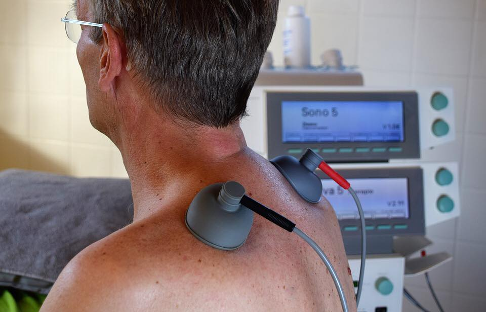

ORDINACIJA OPŠTE MEDICINE - Fiz. Terapija, Viši Fizioterapeut Olgica Vico
Fizikalni set terapija po nalogu lekara specijaliste:
- Kineziterapija kod odraslih (terapija pokretom): Individualni pristup kod ortopedskih, neuroloških, reumatoloških problema uz primenu potrebnih tehnika PNF, KABAT, BOBAT, vežbe istezanja i vežbe jačanja
- Kineziterapija kod dece (terapeutske vežbe): Individualni pristup kod SKOLIOZA, KIFOZA, lošeg držanja i ravnih stopala
- Kineziotejping: Postavljanje traka kod bolnih stanja otoka i upala
- Stimulacija kalusa magnetom
- Parafinoterapija
- Hiperhidroza - pojačano znojenje


- Paket terapija za seniore
- Paket terapija za poslovne klijente